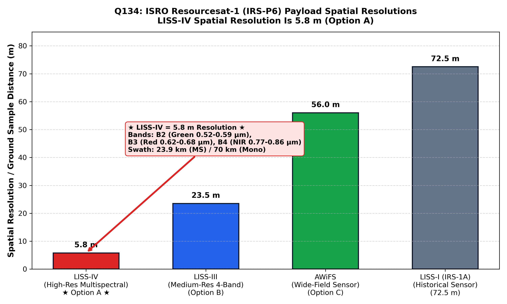

Launched by the Indian Space Research Organisation (ISRO) onboard PSLV-C5 on October 17, 2003, Resourcesat-1 (IRS-P6) is a state-of-the-art Earth observation satellite engineered for multidisciplinary natural resources monitoring, agriculture, soil survey, forestry, and geological mapping.
Placed into a sun-synchronous circular orbit at an altitude of $817\text{ km}$ with an inclination of $98.7^\circ$ and a 10:30 AM equatorial descending node, Resourcesat-1 pioneered a unique three-tier synchronized multi-resolution imaging system designed to observe terrain simultaneously across local, regional, and national scales:
| Sensor Payload | Spatial Resolution (Nadir) | Spectral Bands | Swath Width | Target Application |
|---|---|---|---|---|
| LISS-IV (Linear Imaging Self-Scanning Sensor-IV) (Option A) | $5.8\text{ meters}$ | Band 2 (Green: $0.52\text{--}0.59\text{ }\mu\text{m}$) Band 3 (Red: $0.62\text{--}0.68\text{ }\mu\text{m}$) Band 4 (NIR: $0.77\text{--}0.86\text{ }\mu\text{m}$) |
$23.9\text{ km}$ (Multispectral Mode, MX) $70.3\text{ km}$ (Mono Mode) |
Cadastral-level mapping (1:10,000 to 1:25,000 scale), urban planning, precision agriculture, detailed fault scarp mapping. |
| LISS-III (Linear Imaging Self-Scanning Sensor-III) (Option B) | $23.5\text{ meters}$ | Band 2 (Green), Band 3 (Red), Band 4 (NIR), Band 5 (SWIR: $1.55\text{--}1.70\text{ }\mu\text{m}$) | $141\text{ km}$ | District-level mapping (1:50,000 scale), mineral exploration, regional geological structural analysis. |
| AWiFS (Advanced Wide Field Sensor) (Option C) | $56\text{ meters}$ | Band 2 (Green), Band 3 (Red), Band 4 (NIR), Band 5 (SWIR) | $740\text{ km}$ (Twin camera heads) | National-scale dynamic vegetation monitoring, crop production forecasting, snowmelt runoff with 5-day revisit. |

LISS-IV operates in two distinct imaging modes: a Multispectral (MX) mode transmitting three VNIR spectral bands across a $23.9\text{ km}$ swath, and a Monochrome (Mono) mode transmitting single-band data across a wide $70.3\text{ km}$ swath. Furthermore, the LISS-IV camera head features across-track steerability up to $\pm 26^\circ$, enabling 5-day stereoscopic imaging and targeted disaster revisit.
By official ISRO technical specifications (ISRO NRSC; Lillesand & Kiefer; Bangar, p. 210), the LISS-IV camera onboard Resourcesat-1 (IRS-P6) has a ground sampling distance (spatial resolution at nadir) of exactly $5.8\text{ meters}$ in both multispectral and panchromatic/monochrome modes.
$23.5\text{ m}$ is the spatial resolution of the LISS-III sensor onboard IRS-1C, IRS-1D, and Resourcesat-1/2, not LISS-IV.
$56\text{ m}$ is the nadir spatial resolution of the AWiFS (Advanced Wide Field Sensor) onboard Resourcesat-1/2.
$70.5\text{ m}$ approximates the wide swath width of LISS-IV in Mono mode ($70.3\text{ km}$), or is a distractor derived by confusing swath dimensions with resolution numbers ($72.5\text{ m}$ was the resolution of the legacy LISS-I sensor on IRS-1A/1B).
| IRS Mission | Sensor Name | Nadir Spatial Resolution | Swath Width | Launch Year |
|---|---|---|---|---|
| IRS-1A & 1B | LISS-I / LISS-II | $72.5\text{ m}$ / $36.25\text{ m}$ | $148\text{ km}$ | 1988 / 1991 |
| IRS-1C & 1D | PAN / LISS-III / WiFS | $5.8\text{ m}$ (Pan) / $23.5\text{ m}$ / $188\text{ m}$ | $70\text{ km}$ / $141\text{ km}$ / $810\text{ km}$ | 1995 / 1997 |
| Resourcesat-1 (IRS-P6) | LISS-IV | $5.8\text{ m}$ (Multispectral) | $23.9\text{ km}$ / $70.3\text{ km}$ | 2003 |
| Resourcesat-2 & 2A | LISS-IV / LISS-III / AWiFS | $5.8\text{ m}$ / $23.5\text{ m}$ / $56\text{ m}$ | $70.3\text{ km}$ (full MX) / $141\text{ km}$ / $740\text{ km}$ | 2011 / 2016 |
| Cartosat-1 | PAN (Fore / Aft stereo) | $2.5\text{ m}$ | $30\text{ km}$ | 2005 |
| Cartosat-2 Series | Panchromatic / VNIR | $< 1.0\text{ m}$ (down to $0.65\text{ m}$) | $9.6\text{ km}$ | 2007–2018 |
| Cartosat-3 | PAN / MX | $0.28\text{ m}$ (Pan) / $1.12\text{ m}$ (MX) | $16\text{ km}$ | 2019 |